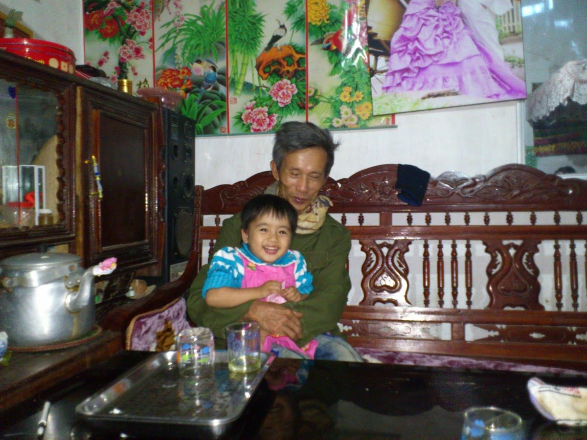
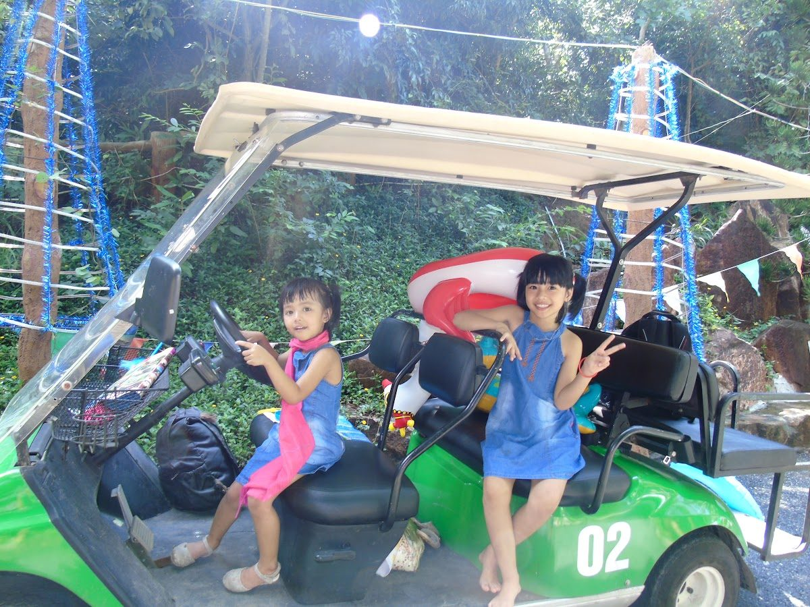
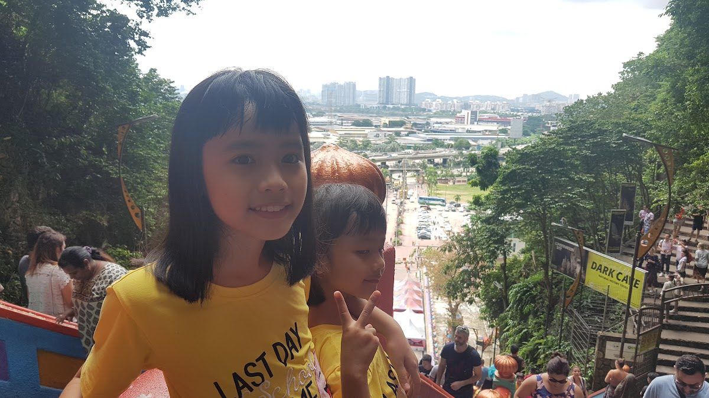
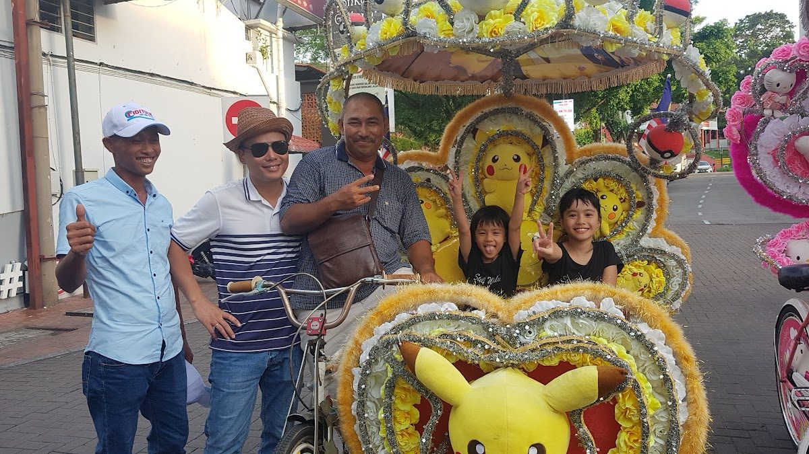

True financial literacy isn't born in lecture halls; it is forged from counting every single coin, mapping out every investment, and solving real problems for real people
The relentlessly blaring horn just stopped; the rumble of heavy trucks kept vibrating, causing the tremor to even widely spread to the second floor of a small 2 storey house in Viet Nam.
Because my house is near a hectic highway, it is irritating to concentrate on doing one's business.
Since I was a 4-year-old child, my dad has been really cool. He always bought a lot of intriguing stuff for me, such as commercial airplane LEGO, 1000 questions that kids might ask, repair tools, and 6 essential piggy banks; however, I have to do a trade for what I love. Every piece of toy has to be paid for by chores' hour or money from cleaning shoes. A desirable toy costs 2 weeks of working, so it means that if working 7 days a week isn't enough, and to ease my eagerness I have to find a shortcut. I have 3 main goals for saving money: 1 - money for sharing; 2 - money for spending; 3 - money for saving. The money that I can use to buy things is the savings; however, I still have to fill out a withdrawal form for my mom. This money is all lucky money, and I was prohibited from using it for personal joy, but for academic purposes. Therefore, I have to work it out by asking for a commitment to loan me money to work at a certain level in academic performance rather than doing chores for 7 days. In the end, I only have to work for 7 days and have my toys.

When I turned 9, my younger sister was 6; we all had lots of lucky money after the Tet holiday. With an huge amount of money, my parents afraid of bad dignity and low financial literacy, so they come up to urge us opening a business. People making drinks from fruit were really satisfied, and everyone during that time loved the "healthy" in terms of food. We sat down and whispered together for a while, listening to my dad; we started to design a mind map of our idea. Unfortunately, the capital is 2 million VND, but the tools cost 38% of the total money, ~ 760k. Then we have to ask our parents for an investment, this is my first contract of loan. After all the capital, there are still 5 brands of straw, 10 types of cups and caps, and basic ingredient suppliers: orange, sugar, honey, kumquat, waiting to be compared and decided. While figuring out the source is hard, because of selling for my dad's colleagues only, it turned out to be a closed loop business tricky. Plus, I was too generous with our ingredients. If one day we don't have enough buyers, vice versa, we will end up broke or lack of juice to sell. Thanks to startup privilege, my parents freed me from the financial burden of electricity and land. 3 months of summer, our profit was 1 million, which could be seen as a failure case, but it taught me about targeting the true customers and managing our money by writing on ceiling paper to track our profit and loss. Later, I attended an abacus class, where I explored my potential in learning math and proving my ability to adapt. I joined a competition and successfully made it to the last round after 4 months of studying.


